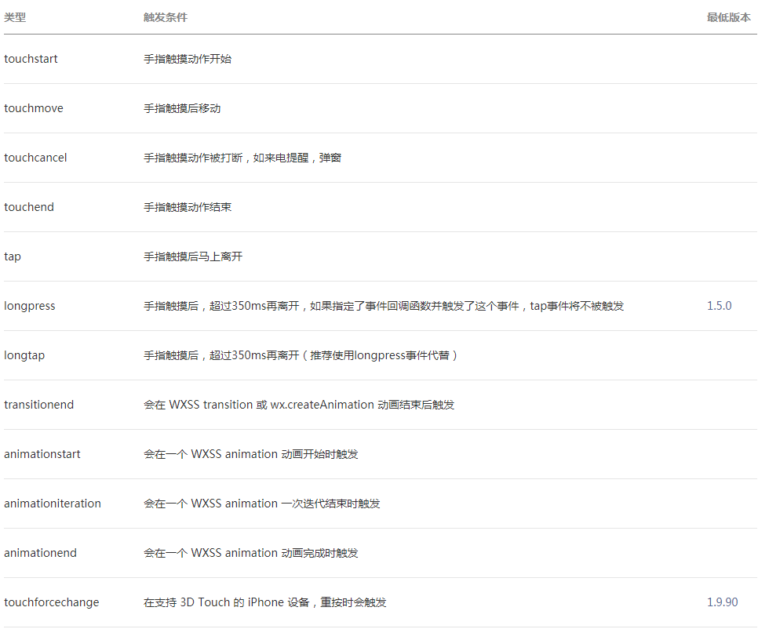
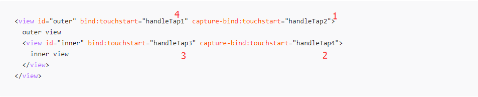
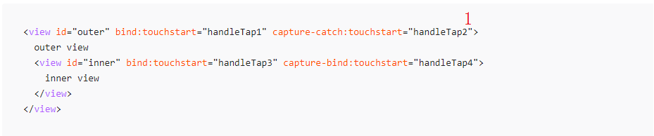

<view>{{ msg }}</view>
<button bindtap="clickMe">点击我</button>
Page({
clickMe: function() {
this.setData({ msg: "Hello World" })
}
})
事件分为冒泡事件和非冒泡事件：
WXML的冒泡事件列表：
事件绑定的写法同组件的属性，以 key、value 的形式。
bind事件绑定不会阻止冒泡事件向上冒泡，catch事件绑定可以阻止冒泡事件向上冒泡。
事件冒泡的顺序为从内向外，事件捕获的顺序为从外到内
 在 WXML 中，这些自定义数据以 data- 开头，多个单词由连字符 - 连接。这种写法中，连字符写法会转换成驼峰写法，而大写字符会自动转成小写字符。
当事件触发时，事件冒泡路径上所有的 mark 会被合并，并返回给事件回调函数。
细节注意事项：
touches 是一个数组，每个元素为一个 Touch 对象（canvas 触摸事件中携带的 touches 是 CanvasTouch 数组）。 表示当前停留在屏幕上的触摸点。
changedTouches 数据格式同 touches。 表示有变化的触摸点，如从无变有（touchstart），位置变化（touchmove），从有变无（touchend、touchcancel）。
自定义事件所携带的数据，如表单组件的提交事件会携带用户的输入，媒体的错误事件会携带错误信息，详见组件定义中各个事件的定义。点击事件的detail 带有的 x, y 同 pageX, pageY 代表距离文档左上角的距离